This month we generalize this problem to polyominoes. Given a polyomino P, what rectangles can be tiled with various sized copies of P so that the scaling factor of each polyomino is equal to the number of (horizontally and vertically) adjacent copies of P?
In such a rectangle, the smallest tiling square must have size 1 or 2, since if a corner square has more than 2 neighbors, at least one of its neighbors must be smaller than size 3. If the smallest square has side 1, this is only possible in a corner, and leads to the 1×2 rectangle. If the smallest square has side 2, again these squares must be in the corners. If these are the only squares we get the 4×4 rectangle. If not, a square between two of them must be bigger, so opposite corner squares must touch, and we get the 4×8 rectangle.
Clint Weaver found many new solutions.
Joe DeVincentis analyzed lots of cases of wrapping large rectangles with small ones, but didn't find any new tilings.
Here are the known neighborly tilings of various polyominoes:
| 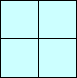 | 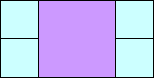 | |
| 1×2 | 4×4 | 4×8 |
| 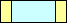 | 
| 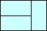 | 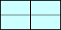 | 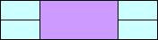 | 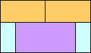 | ||
| 1×4 | 2×2 | 2×6 | 2×10... | 4×6 | 4×8 | 4×16 | 7×12 |
| 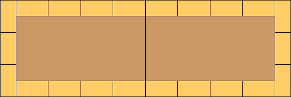 | |
| 8×8 | 18×54 |
| 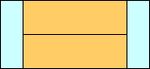 | ||||
| 1×6 | 2×3 | 4×12 | 4×24 | 6×13... (CW) |

| 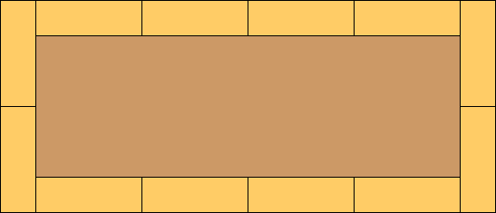 |
| 8×12 | 18×42 |
| 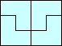 | 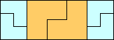 | |
| 2×3 | 6×8 | 6×17 |
| 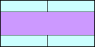 | ||||
| 1×8 | 2×4 | 4×16 | 4×32 | 8×16 |
| 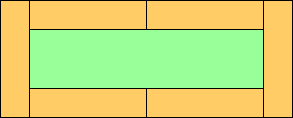 | 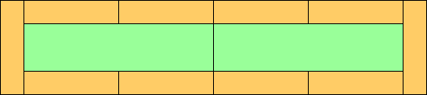 |
| 12×30 | 12×54... |
| 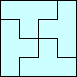 |
| 8×8 |
| 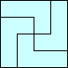 | 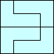 | 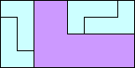 | 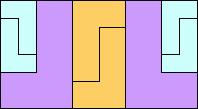 | |
| 2×4 | 8×8 | 8×8 | 8×16 | 12×22... (CW) |
| 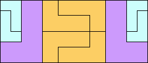 | 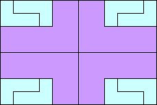 |
| 12×28... (CW) | 16×24 |
| 1×10 | 2×5 | 4×20 |
| 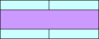 | |
| 4×40 | 8×20 |
| 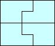 | |
| 2×5 | 8×10 |
| 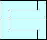 | |
| 2×5 | 8×10 |
| 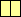 | 
| 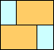 | 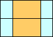 | 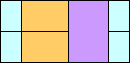 | 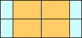 | |||
| 2×6 | 3×4 | 8×12 | 8×24 | 12×13 | 12×16 | 12×17 | 12×25 | 12×26 |
| 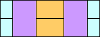 | 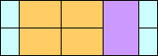 | 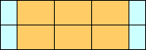 | 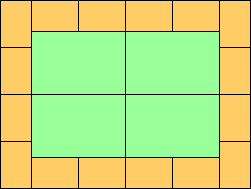 |
| 12×33 | 12×34 | 12×35... | 36×48 |

| 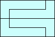 | |
| 2×6 (CW) | 8×12 (CW) |
| 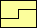 | 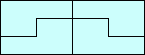 | 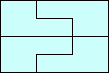 | |
| 2×6 (CW) | 3×4 (CW) | 6×16 (CW) | 8×12 (CW) |
| 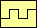 | 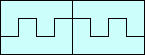 |
| 3×4 (CW) | 6×16 (CW) |
| 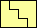 | 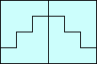 |
| 3×4 (CW) | 8×12 (CW) |
| 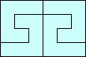 | |
| 3×4 (CW) | 8×12 (CW) |
| 1×12 | 2×6 | 4×24 |

| 
|
| 4×48 | 8×24 |
Okay, this isn't a polyomino, but I couldn't resist trying isosceles right triangles:
| 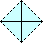 | 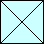 | 
| |
| 1×1 | √8x√8 | 4×4 | 8×8 |
Jeremy Galvagni sent me several tilings of squares with lots of neighborly squares.
Emilio Schiavi, Claudio Baiocchi and I were convinced that the number of neighborly squares in a tiling of an n×n square grows no faster than (n/4 – 2)2, since the most efficient way to tile the interior of the square is by 4×4 neighborly squares. Claudio Baiocchi pointed out that there are counterexamples for small n.
Sasha Ravsky managed to prove a slightly weaker bound: Let n ≥ 4. Fix a tiling of an n×n square. Let S2 be the set of neighborly squares placed in the corners, let S3 be the set of neighborly squares placed along the sides, and let S4 be the set of all other neighborly squares. Each square from the set Si has a side at least i. So, we have: 4|S2|+9|S3|+16|S4| ≤ n2 (condition on the area), 4|S2|+ 3|S3| ≤ 4n (condition on the perimeter), and |S2| ≤ 4. (the square has four corners). Combining these gives |S2|+|S3|+|S4| ≤ (3n2+28n+32)/48.
| 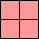 | 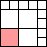 | 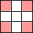 | 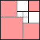 | 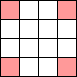 | 
| ||||||
| 0 | 0 | 0 | 4 | 1 | 4 | 4 | 4 | 5 | 6 | 6 | 8 |
| 8 | 9 | 12 | 16 | 12 |
| 20 | 16 | 21 | 24 |
| 21 | 22 | 32 |
If you can extend any of these results, please e-mail me. Click here to go back to Math Magic. Last updated 6/28/18.